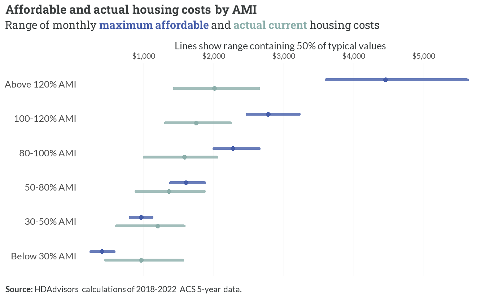
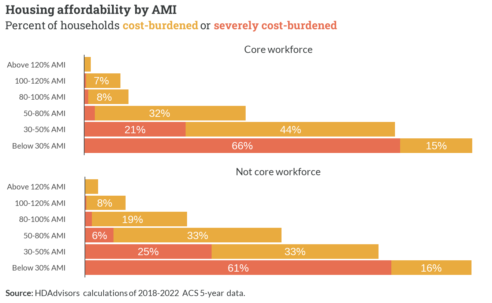
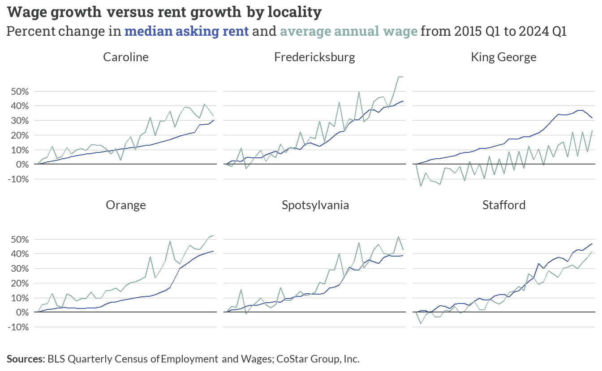
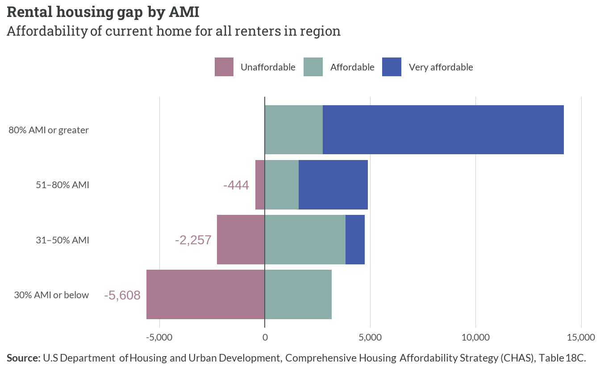

7 Current housing gaps
7.1 Overview
Monthly housing costs show substantial variation across income bands in the Fredericksburg region. Maximum affordable housing costs scale proportionally with Area Median Income (AMI), ranging from about $1,000 monthly for households below 30% AMI to over $4,000 for those above 120% AMI.
However, actual current housing costs demonstrate a compressed range between approximately $1,500 and $2,500 monthly across all income bands, creating particular affordability challenges for lower-income households.
As a result of this mismatch, housing cost burdens reveal stark disparities between income groups, with similar patterns varying between core workforce and other households. Among core workforce households, severe cost burdens affect about two-thirds of those below 30% AMI, while an additional 44% of households between 30-50% AMI face moderate cost burdens.
The burden decreases significantly for higher income brackets, with only 7-8% of households above 80% AMI experiencing any cost burden. Similar patterns emerge for non-core workforce households, though with notably higher cost burdens in the 80-100% AMI range at 19% compared to 8% for core workforce households.

7.2 Rental housing gap
Wage and rent growth patterns across the Fredericksburg region from 2015 to 2024 reveal a concerning dynamic of persistent unaffordability. While both metrics demonstrate parallel upward trajectories, with cumulative increases ranging from 30-50% across localities, this synchronization effectively absorbed most household income gains into housing costs.
This pattern is particularly evident in Fredericksburg proper, where the close tracking between wage and rent growth meant that households earning the average annual wage saw minimal improvement in their discretionary income after accounting for housing expenses.
The parallel growth trajectories effectively locked in existing affordability challenges, as wage increases that might have provided relief from housing cost burdens were instead captured by proportional rent increases. This dynamic appears most pronounced in urban centers like Fredericksburg and Stafford, where the close coupling between wage and rent growth perpetuated, rather than alleviated, existing patterns of housing stress for cost-burdened households.

The rental housing gap analysis reveals severe shortages for lower-income households in the region. The deficit is most acute for households at 30% AMI or below, with a shortfall of approximately 5,600 affordable units. This shortage gradually diminishes at higher income levels, with about 2,300 units needed for households between 31-50% AMI and roughly 450 units for the 51-80% AMI bracket. In contrast, households above 80% AMI have access to abundant affordable and very affordable rental options, suggesting a significant mismatch between housing supply and the needs of lower-income residents.

Affordability categories
Unaffordable — Housing costs exceed the maximum affordable threshold for that household’s AMI level
Affordable — Housing costs align with or fall slightly below the household’s AMI level
Very affordable — Housing costs fall substantially below what the household could afford at their AMI level
Core workforce rental affordability
. . .
7.3 Homeownership gap
. . .
Core workforce homeownership affordability
. . .